Compounds classified as heterocyclic probably constitute the largest and most varied family of organic compounds. After all, every carbocyclic compound, regardless of structure and functionality, may in principle be converted into a collection of heterocyclic analogs by replacing one or more of the ring carbon atoms with a different element. Even if we restrict our consideration to oxygen, nitrogen and sulfur (the most common heterocyclic elements), the permutations and combinations of such a replacement are numerous.
Devising a systematic nomenclature system for heterocyclic compounds presented a formidable challenge, which has not been uniformly concluded. Many heterocycles, especially amines, were identified early on, and received trivial names which are still preferred. Some monocyclic compounds of this kind are shown in the following chart, with the common (trivial) name in bold and a systematic name based on the Hantzsch-Widman system given beneath it in blue. The rules for using this system will be given later. For most students, learning these common names will provide an adequate nomenclature background.
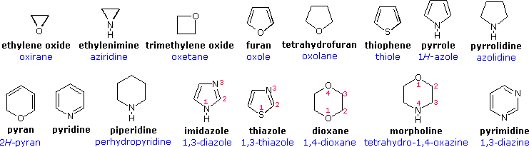
An easy to remember, but limited, nomenclature system makes use of an elemental prefix for the heteroatom followed by the appropriate carbocyclic name. A short list of some common prefixes is given in the following table, priority order increasing from right to left. Examples of this nomenclature are: ethylene oxide = oxacyclopropane, furan = oxacyclopenta-2,4-diene, pyridine = azabenzene, and morpholine = 1-oxa-4-azacyclohexane.
The Hantzsch-Widman system provides a more systematic method of naming heterocyclic compounds that is not dependent on prior carbocyclic names. It makes use of the same hetero atom prefix defined above (dropping the final "a"), followed by a suffix designating ring size and saturation. As outlined in the following table, each suffix consists of a ring size root (blue) and an ending intended to designate the degree of unsaturation in the ring. In this respect, it is important to recognize that the saturated suffix applies only to completely saturated ring systems, and the unsaturated suffix applies to rings incorporating the maximum number of non-cumulated double bonds. Systems having a lesser degree of unsaturation require an appropriate prefix, such as "dihydro"or "tetrahydro".
Despite the general systematic structure of the Hantzsch-Widman system, several exceptions and modifications have been incorporated to accommodate conflicts with prior usage. Some examples are:
Examples of these nomenclature rules are written in blue, both in the previous diagram and that shown below. Note that when a maximally unsaturated ring includes a saturated atom, its location may be designated by a "#H " prefix to avoid ambiguity, as in pyran and pyrrole above and several examples below. When numbering a ring with more than one heteroatom, the highest priority atom is #1 and continues in the direction that gives the next priority atom the lowest number.
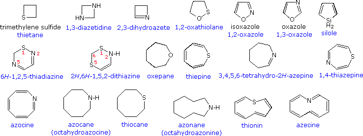
All the previous examples have been monocyclic compounds. Polycyclic compounds incorporating one or more heterocyclic rings are well known. A few of these are shown in the following diagram. As before, common names are in black and systematic names in blue. The two quinolines illustrate another nuance of heterocyclic nomenclature. Thus, the location of a fused ring may be indicated by a lowercase letter which designates the edge of the heterocyclic ring involved in the fusion, as shown by the pyridine ring in the green shaded box.
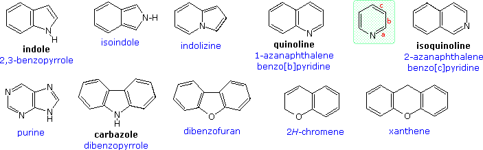
Heterocyclic rings are found in many naturally occurring compounds. Most notably, they compose the core structures of mono and polysaccharides, and the four DNA bases that establish the genetic code. By clicking on the above diagram some other examples of heterocyclic natural products will be displayed.
Oxiranes (epoxides) are the most commonly encountered three-membered heterocycles. Epoxides are easily prepared by reaction of alkenes with peracids, usually with good stereospecificity. Because of the high angle strain of the three-membered ring, epoxides are more reactive that unstrained ethers. Addition reactions proceeding by electrophilic or nucleophilic opening of the ring constitute the most general reaction class. Example 1 in the following diagram shows one such transformation, which is interesting due to subsequent conversion of the addition intermediate into the corresponding thiirane. The initial ring opening is stereoelectronically directed in a trans-diaxial fashion, the intermediate relaxing to the diequatorial conformer before cyclizing to a 1,3-oxathiolane intermediate. Other examples show similar addition reactions to thiiranes and aziridines. The acid-catalyzed additions in examples 2 and 3, illustrate the influence of substituents on the regioselectivity of addition. Example 2 reflects the SN2 character of nucleophile (chloride anion) attack on the protonated aziridine (the less substituted carbon is the site of addition). The phenyl substituent in example 3 serves to stabilize the developing carbocation to such a degree that SN1 selectivity is realized. The reduction of thiiranes to alkenes by reaction with phosphite esters (example 6) is highly stereospecific, and is believed to take place by an initial bonding of phosphorous to sulfur.
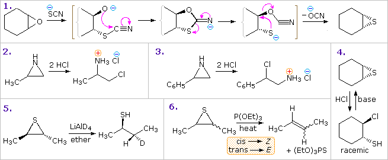
By clicking on the above diagram, four additional example of three-membered heterocycle reactivity or intermediacy will be displayed. Examples 7 and 8 are thermal reactions in which both the heteroatom and the strained ring are important factors. The α-lactone intermediate shown in the solvolysis of optically active 2-bromopropanoic acid (example 9) accounts both for the 1st-order kinetics of this reaction and the retention of configuration in the product. Note that two inversions of configuration at C-2 result in overall retention. Many examples of intramolecular interactions, such as example 10, have been documented. An interesting regioselectivity in the intramolecular ring-opening reactions of disubstituted epoxides having a pendant γ-hydroxy substituent has been noted. As illustrated below, acid and base-catalyzed reactions normally proceed by 5-exo-substitution (reaction 1), yielding a tetrahydrofuran product. However, if the oxirane has an unsaturated substituent (vinyl or phenyl), the acid-catalyzed opening occurs at the allylic (or benzylic) carbon (reaction 2) in a 6-endo fashion. The π-electron system of the substituent assists development of positive charge at the adjacent oxirane carbon, directing nucleophilic attack to that site.
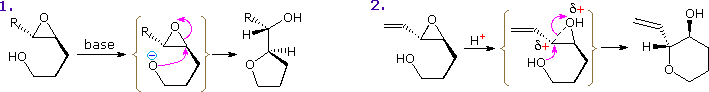
Preparation Several methods of preparing four-membered heterocyclic compounds are shown in the following diagram. The simple procedure of treating a 3-halo alcohol, thiol or amine with base is generally effective, but the yields are often mediocre. Dimerization and elimination are common side reactions, and other functions may compete in the reaction. In the case of example 1, cyclization to an oxirane competes with thietane formation, but the greater nucleophilicity of sulfur dominates, especially if a weak base is used. In example 2 both aziridine and azetidine formation are possible, but only the former is observed. This is a good example of the kinetic advantage of three-membered ring formation. Example 4 demonstrates that this approach to azetidine formation works well in the absence of competition. Indeed, the exceptional yield of this product is attributed to the gem-dimethyl substitution, the Thorpe-Ingold effect, which is believed to favor coiled chain conformations. The relatively rigid configuration of the substrate in example 3, favors oxetane formation and prevents an oxirane cyclization from occurring. Finally, the Paterno-Buchi photocyclizations in examples 5 and 6 are particularly suited to oxetane formation.
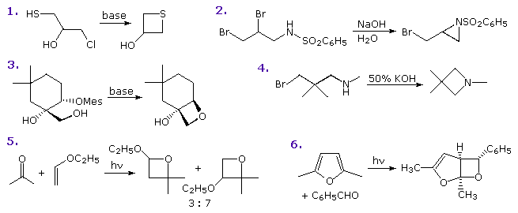
Reactions Reactions of four-membered heterocycles also show the influence of ring strain. Some examples are given in the following diagram. Acid-catalysis is a common feature of many ring-opening reactions, as shown by examples 1, 2 & 3a. In the thietane reaction (2), the sulfur undergoes electrophilic chlorination to form a chlorosulfonium intermediate followed by a ring-opening chloride ion substitution. Strong nucleophiles will also open the strained ether, as shown by reaction 3b. Cleavage reactions of β-lactones may take place either by acid-catalyzed acyl exchange, as in 4a, or by alkyl-O rupture by nucleophiles, as in 4b. Example 5 is an interesting case of intramolecular rearrangement to an ortho-ester. Finally, the β-lactam cleavage of penicillin G (reaction 6) testifies to the enhanced acylating reactivity of this fused ring system. Most amides are extremely unreactive acylation reagents, thanks to stabilization by p-π resonance. Such electron pair delocalization is diminished in the penicillins, leaving the nitrogen with a pyramidal configuration and the carbonyl function more reactive toward nucleophiles.
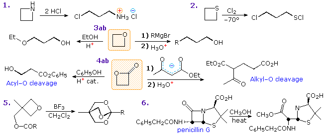
Preparation Commercial preparation of furan proceeds by way of the aldehyde, furfural, which in turn is generated from pentose containing raw materials like corncobs, as shown in the uppermost equation below. Similar preparations of pyrrole and thiophene are depicted in the second row equations. Equation 1 in the third row illustrates a general preparation of substituted furans, pyrroles and thiophenes from 1,4-dicarbonyl compounds, known as the Paal-Knorr synthesis. Many other procedures leading to substituted heterocycles of this kind have been devised. Two of these are shown in reactions 2 and 3. Furan is reduced to tetrahydrofuran by palladium-catalyzed hydrogenation. This cyclic ether is not only a valuable solvent, but it is readily converted to 1,4-dihalobutanes or 4-haloalkylsulfonates, which may be used to prepare pyrrolidine and thiolane. Dipolar cycloaddition reactions often lead to more complex five-membered heterocycles.
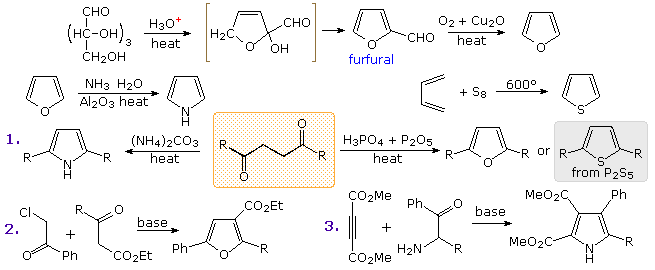
Indole is probably the most important fused ring heterocycle in this class. By clicking on the above diagram three examples of indole synthesis will be displayed. The first proceeds by an electrophilic substitution of a nitrogen-activated benzene ring. The second presumably takes place by formation of a dianionic species in which the ArCH2(–) unit bonds to the deactivated carbonyl group. Finally, the Fischer indole synthesis is a remarkable sequence of tautomerism, sigmatropic rearrangement, nucleophilic addition, and elimination reactions occurring subsequent to phenylhydrazone formation. This interesting transformation involves the oxidation of two carbon atoms and the reduction of one carbon and both nitrogen atoms.
Reactions The chemical reactivity of the saturated members of this class of heterocycles: tetrahydrofuran, thiolane and pyrrolidine, resemble that of acyclic ethers, sulfides, and 2º-amines, and will not be described here. 1,3-Dioxolanes and dithiolanes are cyclic acetals and thioacetals. These units are commonly used as protective groups for aldehydes and ketones, and may be hydrolyzed by the action of aqueous acid. It is the "aromatic" unsaturated compounds, furan, thiophene and pyrrole that require our attention. In each case the heteroatom has at least one pair of non-bonding electrons that may combine with the four π-electrons of the double bonds to produce an annulene having an aromatic sextet of electrons. This is illustrated by the resonance description at the top of the following diagram. The heteroatom Y becomes sp2-hybridized and acquires a positive charge as its electron pair is delocalized around the ring. An easily observed consequence of this delocalization is a change in dipole moment compared with the analogous saturated heterocycles, which all have strong dipoles with the heteroatom at the negative end. As expected, the aromatic heterocycles have much smaller dipole moments, or in the case of pyrrole a large dipole in the opposite direction. An important characteristic of aromaticity is enhanced thermodynamic stability, and this is usually demonstrated by relative heats of hydrogenation or heats of combustion measurements. By this standard, the three aromatic heterocycles under examination are stabilized, but to a lesser degree than benzene. Additional evidence for the aromatic character of pyrrole is found in its exceptionally weak basicity (pKa ca. 0) and strong acidity (pKa = 15) for a 2º-amine. The corresponding values for the saturated amine pyrrolidine are: basicity 11.2 and acidity 32.
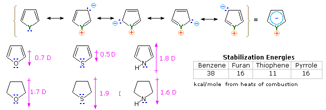
Another characteristic of aromatic systems, of particular importance to chemists, is their pattern of reactivity with electrophilic reagents. Whereas simple cycloalkenes generally give addition reactions, aromatic compounds tend to react by substitution. As noted for benzene and its derivatives, these substitutions take place by an initial electrophile addition, followed by a proton loss from the "onium" intermediate to regenerate the aromatic ring. The aromatic five-membered heterocycles all undergo electrophilic substitution, with a general reactivity order: pyrrole >> furan > thiophene > benzene. Some examples are given in the following diagram. The reaction conditions show clearly the greater reactivity of furan compared with thiophene. All these aromatic heterocycles react vigorously with chlorine and bromine, often forming polyhalogenated products together with polymers. The exceptional reactivity of pyrrole is evidenced by its reaction with iodine (bottom left equation), and formation of 2-acetylpyrrole by simply warming it with acetic anhydride (no catalyst).
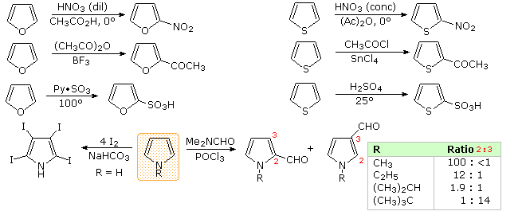
There is a clear preference for substitution at the 2-position (α) of the ring, especially for furan and thiophene. Reactions of pyrrole require careful evaluation, since N-protonation destroys its aromatic character. Indeed, N-substitution of this 2º-amine is often carried out prior to subsequent reactions. For example, pyrrole reacts with acetic anhydride or acetyl chloride and triethyl amine to give N-acetylpyrrole. Consequently, the regioselectivity of pyrrole substitution is variable, as noted by the bottom right equation. An explanation for the general α-selectivity of these substitution reactions is apparent from the mechanism outlined below. The intermediate formed by electrophile attack at C-2 is stabilized by charge delocalization to a greater degree than the intermediate from C-3 attack. From the Hammond postulate we may then infer that the activation energy for substitution at the former position is less than the latter substitution.
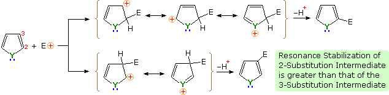
Functional substituents influence the substitution reactions of these heterocycles in much the same fashion as they do for benzene. Indeed, once one understands the ortho-para and meta-directing character of these substituents, their directing influence on heterocyclic ring substitution is not difficult to predict. The following diagram shows seven such reactions. Reactions 1 & 2 are 3-substituted thiophenes, the first by an electron donating substituent and the second by an electron withdrawing group. The third reaction has two substituents of different types in the 2 and 5-positions. Finally, examples 4 through 7 illustrate reactions of 1,2- and 1,3-oxazole, thiazole and diazole. Note that the basicity of the sp2-hybridized nitrogen in the diazoles is over a million times greater than that of the apparent sp3-hybridized nitrogen, the electron pair of which is part of the aromatic electron sextet.
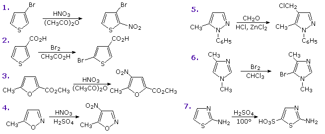
Other possible reactions are suggested by the structural features of these heterocycles. For example, furan could be considered an enol ether and pyrrole an enamine. Such functions are known to undergo acid-catalyzed hydrolysis to carbonyl compounds and alcohols or amines. Since these compounds are also heteroatom substituted dienes, we might anticipate Diels-Alder cycloaddition reactions with appropriate dienophiles. These possibilities will be illustrated above by clicking on the diagram. As noted in the upper example, furans may indeed be hydrolyzed to 1,4-dicarbonyl compounds, but pyrroles and thiophenes behave differently. The second two examples, shown in the middle, demonstrate typical reactions of furan and pyrrole with the strong dienophile maleic anhydride. The former participates in a cycloaddition reaction; however, the pyrrole simply undergoes electrophilic substitution at C-2. Thiophene does not easily react with this dienophile. The bottom line of the new diagram illustrates the remarkable influence that additional nitrogen units have on the hydrolysis of a series of N-acetylazoles in water at 25 ºC and pH=7. The pyrrole compound on the left is essentially unreactive, as expected for an amide, but additional nitrogens markedly increase the rate of hydrolysis. This effect has been put to practical use in applications of the acylation reagent 1,1'-carbonyldiimidazole (Staab's reagent).
Another facet of heterocyclic chemistry was disclosed in the course of investigations concerning the action of thiamine (following diagram). As its pyrophosphate derivative, thiamine is a coenzyme for several biochemical reactions, notably decarboxylations of pyruvic acid to acetaldehyde and acetoin. Early workers speculated that an "active aldehyde" or acyl carbanion species was an intermediate in these reactions. Many proposals were made, some involving the aminopyrimidine moiety, and others, ring-opened hydrolysis derivatives of the thiazole ring, but none were satisfactory. This puzzle was solved when R. Breslow (Columbia) found that the C-2 hydrogen of thiazolium salts was unexpectedly acidic (pKa ca. 13), forming a relatively stable ylide conjugate base. As shown, this rationalizes the facile decarboxylation of thiazolium-2-carboxylic acids and deuterium exchange at C-2 in neutral heavy water. Appropriate thiazolium salts catalyze the conversion of aldehydes to acyloins in much the same way that cyanide ion catalyzes the formation of benzoin from benzaldehyde, the benzoin condensation. By clicking on the diagram, a new display will show mechanisms for these two reactions. Note that in both cases an acyl anion equivalent is formed and then adds to a carbonyl function in the expected manner. The benzoin condensation is limited to aromatic aldehydes, but the use of thiazolium catalysts has proven broadly effective for aliphatic and aromatic aldehydes. This approach to acyloins employs milder conditions than the reduction of esters to enediol intermediates by the action of metallic sodium .
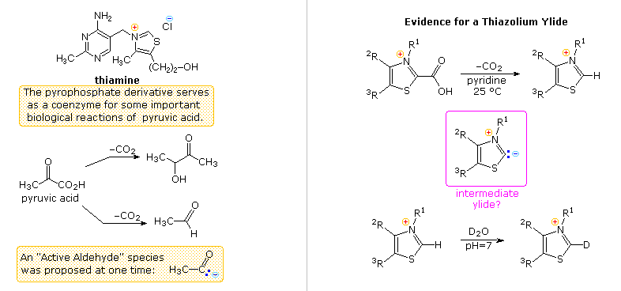
The most important condensed ring system related to these heterocycles is indole. Some electrophilic substitution reactions of indole are shown in the following diagram. Whether the indole nitrogen is substituted or not, the favored site of attack is C-3 of the heterocyclic ring. Bonding of the electrophile at that position permits stabilization of the onium-intermediate by the nitrogen without disruption of the benzene aromaticity.
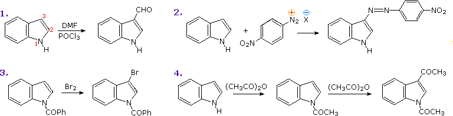
Properties The chemical reactivity of the saturated members of this class of heterocycles: tetrahydropyran, thiane and piperidine, resemble that of acyclic ethers, sulfides, and 2º-amines, and will not be described here. 1,3-Dioxanes and dithianes are cyclic acetals and thioacetals. These units are commonly used as protective groups for aldehydes and ketones, as well as synthetic intermediates, and may be hydrolyzed by the action of aqueous acid. The reactivity of partially unsaturated compounds depends on the relationship of the double bond and the heteroatom (e.g. 3,4-dihydro-2H-pyran is an enol ether). Fully unsaturated six-membered nitrogen heterocycles, such as pyridine, pyrazine, pyrimidine and pyridazine, have stable aromatic rings. Oxygen and sulfur analogs are necessarily positively charged, as in the case of 2,4,6-triphenylpyrylium tetrafluoroborate.
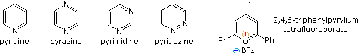
From heat of combustion measurements, the aromatic stabilization energy of pyridine is 21 kcal/mole. The resonance description drawn at the top of the following diagram includes charge separated structures not normally considered for benzene. The greater electronegativity of nitrogen (relative to carbon) suggests that such canonical forms may contribute to a significant degree. Indeed, the larger dipole moment of pyridine compared with piperidine supports this view. Pyridine and its derivatives are weak bases, reflecting the sp2 hybridization of the nitrogen. From the polar canonical forms shown here, it should be apparent that electron donating substituents will increase the basicity of a pyridine, and that substituents on the 2 and 4-positions will influence this basicity more than an equivalent 3-substituent. The pKa values given in the table illustrate a few of these substituent effects. Methyl substituted derivatives have the common names picoline (methyl pyridines), lutidine (dimethyl pyridines) and collidine (trimethyl pyridines). The influence of 2-substituents is complex, consisting of steric hindrance and electrostatic components. 4-Dimethylaminopyridine is a useful catalyst for acylation reactions carried out in pyridine as a solvent. At first glance, the sp3 hybridized nitrogen might appear to be the stronger base, but it should be remembered that N,N-dimethylaniline has a pKa slightly lower than that of pyridine itself. Consequently, the sp2 ring nitrogen is the site at which protonation occurs.
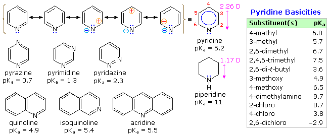
The diazines pyrazine, pyrimidine and pyridazine are all weaker bases than pyridine due to the inductive effect of the second nitrogen. However, the order of base strength is unexpected. A consideration of the polar contributors helps to explain the difference between pyrazine and pyrimidine, but the basicity of pyridazine seems anomalous. It has been suggested that electron pair repulsion involving the vicinal nitrogens destabilizes the neutral base relative to its conjugate acid.
Electrophilic Substitution of Pyridine Pyridine is a modest base (pKa=5.2). Since the basic unshared electron pair is not part of the aromatic sextet, as in pyrrole, pyridinium species produced by N-substitution retain the aromaticity of pyridine. As shown below, N-alkylation and N-acylation products may be prepared as stable crystalline solids in the absence of water or other reactive nucleophiles. The N-acyl salts may serve as acyl transfer agents for the preparation of esters and amides. Because of the stability of the pyridinium cation, it has been used as a moderating component in complexes with a number of reactive inorganic compounds. Several examples of these stable and easily handled reagents are shown at the bottom of the diagram. The poly(hydrogen fluoride) salt is a convenient source of HF for addition to alkenes and conversion of alcohols to alkyl fluorides, pyridinium chlorochromate (PCC) and its related dichromate analog are versatile oxidation agents and the tribromide salt is a convenient source of bromine. Similarly, the reactive compounds sulfur trioxide and diborane are conveniently and safely handled as pyridine complexes. Amine oxide derivatives of 3º-amines and pyridine are readily prepared by oxidation with peracids or peroxides, as shown by the upper right equation. Reduction back to the amine can usually be achieved by treatment with zinc (or other reactive metals) in dilute acid.
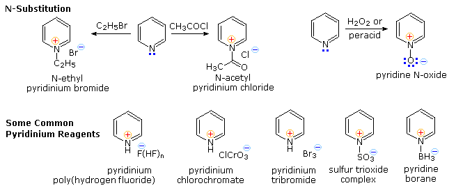
From the previous resonance description of pyridine, we expect this aromatic amine to undergo electrophilic substitution reactions far less easily than does benzene. Furthermore, as depicted above by clicking on the diagram, the electrophilic reagents and catalysts employed in these reactions coordinate with the nitrogen electron pair, exacerbating the positive charge at positions 2,4 & 6 of the pyridine ring. Three examples of the extreme conditions required for electrophilic substitution are shown on the left. Substituents that block electrophile coordination with nitrogen or reduce the basicity of the nitrogen facilitate substitution, as demonstrated by the examples in the blue-shaded box at the lower right, but substitution at C-3 remains dominant. Activating substituents at other locations also influence the ease and regioselectivity of substitution. By clicking on the diagram a second time, three examples will shown on the left. The amine substituent in the upper case directs the substitution to C-2, but the weaker electron donating methyl substituent in the middle example cannot overcome the tendency for 3-substitution. Hydroxyl substituents at C-2 and C-4 tautomerize to pyridones, as shown for the 2-isomer at the bottom left. Pyridine N-oxide undergoes some electrophilic substitutions at C-4 and others at C-3. The coordinate covalent N–O bond may exert a push-pull influence, as illustrated by the two examples on the right. Although the positively charged nitrogen alone would have a strong deactivating influence, the negatively charged oxygen can introduce electron density at C-2, C-4 & C-6 by π-bonding to the ring nitrogen. This is a controlling factor in the relatively facile nitration at C-4. However, if the oxygen is bonded to an electrophile such as SO3, the resulting pyridinium ion will react sluggishly and preferentially at C-3.
The fused ring heterocycles quinoline and isoquinoline provide additional evidence for the stability of the pyridine ring. Vigorous permanganate oxidation of quinoline results in predominant attack on the benzene ring; isoquinoline yields products from cleavage of both rings. Note that naphthalene is oxidized to phthalic acid in a similar manner. By contrast, the heterocyclic ring in both compounds undergoes preferential catalytic hydrogenation to yield tetrahydroproducts. Electrophilic nitration, halogenation and sulfonation generally take place at C-5 and C-8 of the benzene ring, in agreement with the preceding description of similar pyridine reactions and the kinetically favored substitution of naphthalene at C-1 (α) rather than C-2 (β).
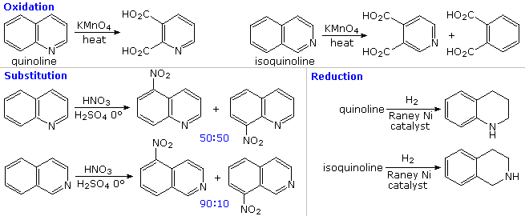
Other Reactions of Pyridine
Thanks to the nitrogen in the ring, pyridine compounds undergo nucleophilic substitution reactions more easily than equivalent benzene derivatives. In the following diagram, reaction 1 illustrates displacement of a 2-chloro substituent by ethoxide anion. The addition-elimination mechanism shown for this reaction is helped by nitrogen's ability to support a negative charge. A similar intermediate may be written for substitution of a 4-halopyridine, but substitution at the 3-position is prohibited by the the failure to create an intermediate of this kind. The two Chichibabin aminations in reactions 2 and 3 are remarkable in that the leaving anion is hydride (or an equivalent). Hydrogen is often evolved in the course of these reactions. In accord with this mechanism, quinoline is aminated at both C-2 and C-4. Addition of strong nucleophiles to N-oxide derivatives of pyridine proceed more rapidly than to pyridine itself, as demonstrated by reactions 4 and 5. The dihydro-pyridine intermediate easily loses water or its equivalent by elimination of the –OM substituent on nitrogen.
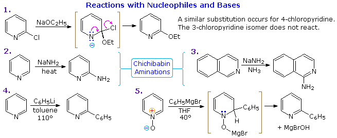
By clicking on the above diagram, five additional examples of base or nucleophile reactions with substituted pyridine will be displayed. Because the pyridine ring (and to a greater degree the N-oxide ring) can support a negative charge, alkyl substituents in the 2- and 4-locations are activated in the same fashion as by a carbonyl group. Reactions 6 and 7 show alkylation and condensation reactions resulting from this activation. Reaction 8 is an example of N-alkylpyridone formation by hydroxide addition to an N-alkyl pyridinium cation, followed by mild oxidation. Birch reduction converts pyridines to dihydropyridines that are bis-enamines and may be hydrolyzed to 1,5-dicarbonyl compounds. Pyridinium salts undergo a one electron transfer to generate remarkably stable free radicals. The example shown in reaction 9 is a stable (in the absence of oxygen), distillable green liquid. Although 3-halopyridines do not undergo addition-elimination substitution reactions as do their 2- and 4-isomers, the strong base sodium amide effects amination by way of a pyridyne intermediate. This is illustrated by reaction 10. It is interesting that 3-pyridyne is formed in preference to 2-pyridyne. The latter is formed if C-4 is occupied by an alkyl substituent. The pyridyne intermediate is similar to benzyne.
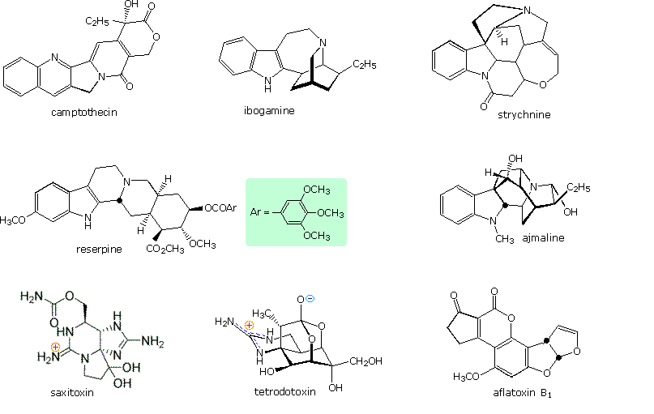
Porphyrin is an important cyclic tertrapyrrole that is the core structure of heme and chlorophyll. These structures will be drawn above by clicking on the diagram.
Derivatives of the simple fused ring heterocycle purine constitute an especially important and abundant family of natural products. The amino compounds adenine and guanine are two of the complementary bases that are essential components of DNA. Structures for these compounds are shown in the following diagram. Xanthine and uric acid are products of the metabolic oxidation of purines. Uric acid is normally excreted in the urine; an excess serum accumulation of uric acid may lead to an arthritic condition known as gout.
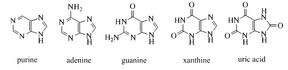
Sulfur heterocycles are found in nature, but to a lesser degree than their nitrogen and oxygen analogs. Two members of the B-vitamin complex, biotin and thiamine, incorporate such heterocyclic moieties. These are shown together with other heterocyclic B-vitamins in the following diagram.
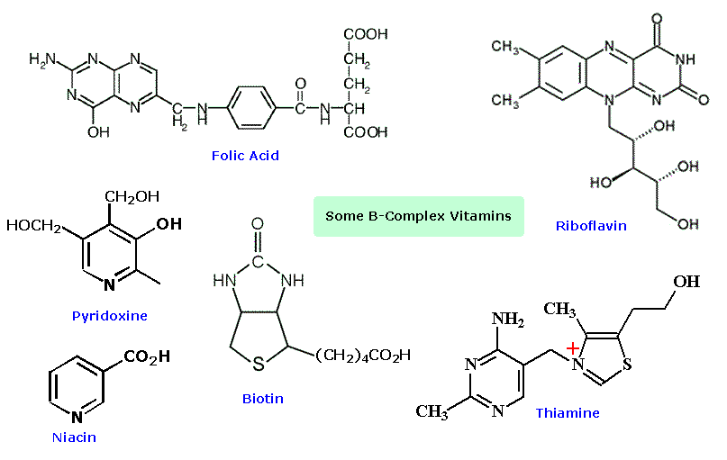
Terthienyl is an interesting thiophene trimer found in the roots of marigolds, where it provides nemicidal activity. Studies have shown that UV irradiation of terthienyl produces a general phototoxicity for many organisms. Polymers incorporating thiophene units and fused systems such as dithienothiophene have interesting electromagnetic properties, and show promise as organic metal-like conductors and photovoltaic materials. The charge transfer complex formed by tetrathiofulvalene and tetracyanoquinodimethane has one of the highest electrical conductivities reported for an organic solid.
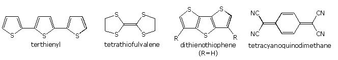